Люди всегда тянулись к звёздам. Ночное небо вдохновляло поэтов, художников, учёных и мечтателей на протяжении веков. Задолго до того, как первый спутник вышел на орбиту, фантасты рисовали картины будущего: города на Луне, экспедиции на Марс, прогулки среди далёких планет. Их грёзы казались смелыми, иногда наивными, но всегда красивыми и полными надежды.
«Грёзы о космосе» — это взгляд на то, каким представляли Вселенную раньше и какой она открылась на самом деле. Это история мечты, которая шаг за шагом превращается в реальность.
Журнал "Техника молодёжи"
«Техника – молодёжи» – одно из самых известных научно-популярных изданий. Первый номер вышел в 1933 году,
и журнал продолжает издаваться до сих пор.На протяжении десятилетий он был настоящим окном в мир науки и фантазии.
На его страницах можно было встретить статьи о транспорте и технике, материалы о новейших открытиях, уфологии,
космосе и футурологии. Особое место занимала художественная и научная фантастика – рассказы и иллюстрации,
где реальность переплеталась с вымыслом, а технические идеи соседствовали с мечтами о будущем.
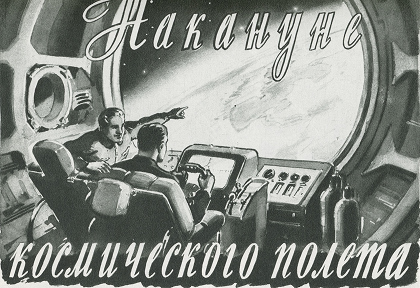
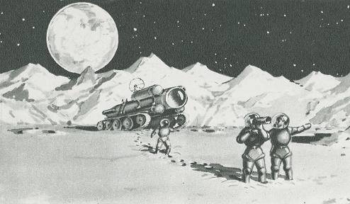
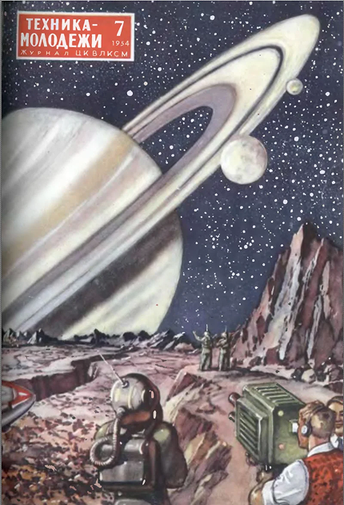
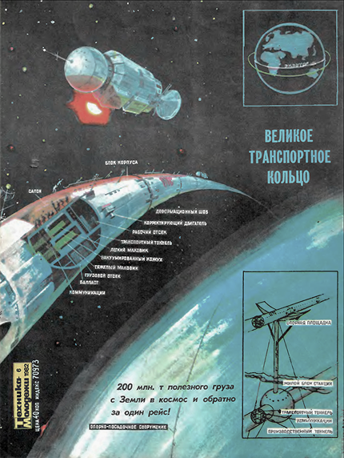
Художники Константин Арцеулов и Александр Лебедев. № 2 1953 года
Картинка из недалёкого будущего, первые советские космонавты вступили на покрытую толстым слоем вековой пыли почву Луны.
№ 2 1953 года
Футуризм и мир будущего
Неотъемлемая часть журнала – футуризм. На его обложках и в статьях регулярно появлялись смелые прогнозы,
технические проекты и концепты городов завтрашнего дня. Иллюстрации поражали воображение и вдохновляли читателей.
Летающая тарелка (1964 год) – пример интереса к теме НЛО, который поднимался и в последующие десятилетия,
в том числе в конце 1980-х – начале 1990-х годов.
Великое транспортное кольцо (1982 год) – грандиозная инженерная концепция, которая и сегодня выглядит почти невозможной.
Летающие острова Венеры (1971 год) – смелая идея освоения планеты: на поверхности температура достигает +400 °C,
но на высоте 50–60 км условия близки к земным. Автор предложил разместить города в гигантских кислородных шарах
с пропеллерами — фактически «мегаполисах-самолётах», скользящих в атмосфере Венеры и следящих за солнечным светом.
Подобные проекты казались невероятными, но именно они делали «Технику – молодёжи» особенным изданием — журналом,
который учил мечтать о будущем.
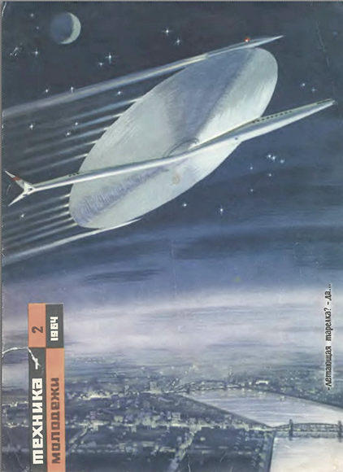

Космос на страницах журнала
Космос был одной из главных тем журнала. В 1950–1960-е годы, на волне космической гонки, «Техника – молодёжи»
писала о запуске спутников, полёте Гагарина, планах экспедиций к Луне. Помимо фактов, издание показывало схемы ракет,
проекты орбитальных станций, лунных баз и даже межзвёздных кораблей.
Читатели узнавали о термоядерных двигателях, межпланетных перелётах и поисках внеземного разума.
Яркие иллюстрации художников-фантастов делали космос осязаемым и близким. Для многих именно «Техника – молодёжи»
стала первым шагом к астрономии и ракетостроению.
Фантастика и Туманность Андромеды
Помимо научных статей, журнал часто публиковал художественную фантастику. Например, обсуждалась тема «Туманности Андромеды».
В одном из сюжетов звездолёт «Тантра», возвращаясь из 37-й звёздной экспедиции, попадает в гравитационное поле железной звезды
и вынужден совершить посадку на планету невидимой системы. Там экипаж находит загадочный инопланетный корабль — «спиралодиск».
Но рядом стоит и другой земной корабль — «Парус», экипаж которого погиб от местной формы жизни.
Топливо с «Паруса» переносится на «Тантру», и экспедиция получает шанс вернуться домой.
Такие истории сочетали научную основу с захватывающими приключениями и давали читателям возможность
представить себя участниками великих космических открытий.
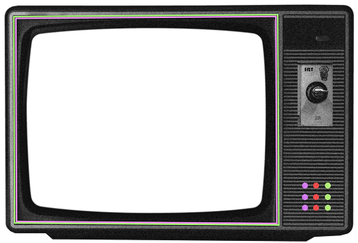
фильм «Путешествие на Луну»
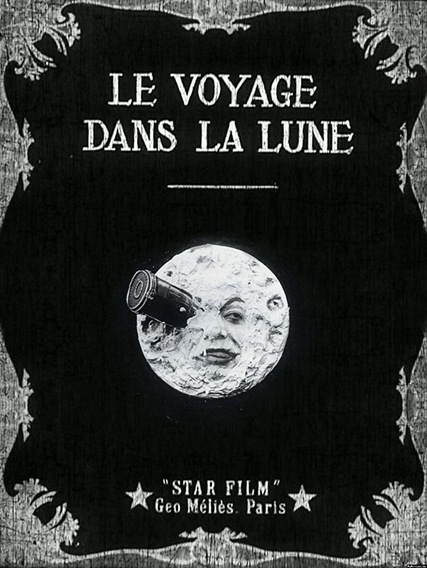
Если в журналах вроде «Техники – молодёжи» космическое будущее рисовали на бумаге, то в начале XX века человечество
впервые увидело фантастику в движении. В сентябре 1902 года на экраны вышел фильм Жоржа Мельеса «Путешествие на Луну» — и
многие историки считают его первой научно-фантастической картиной в истории кино.
Картина стала настоящим шедевром немого кино: необычные декорации, трюки и спецэффекты превратили её в зрелищное чудо своего времени.
Знаменитый кадр — Луна с лицом, в глаз которой вонзился снаряд, — стал, пожалуй, первым «мемом» в истории кинематографа.
Более чем через сто лет он остаётся узнаваемым и культовым символом фантастических мечтаний.
Фильм длится всего 12 минут, но вмещает целый мир фантастических идей. Группа учёных решает совершить полёт на Луну и
строит гигантскую пушку, чтобы отправить в космос ракету в форме снаряда.
На Луне герои встречают странных существ — селенитов, которые разрушаются от малейшего толчка.
Там растут огромные грибы, а ландшафт полон причудливых форм. После приключений путешественники
возвращаются на Землю, спустившись с лунной горы прямо в океан.
Фильм сочетает научные идеи с комедийными элементами и яркими визуальными эффектами. Кадр с Луной,
в глаз которой попал снаряд, стал культовым изображением и считается первым «мемом» из кино.
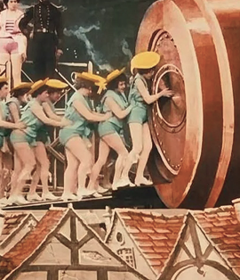
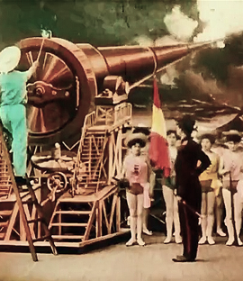
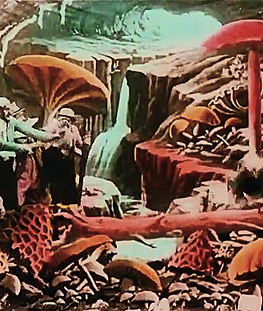
роман «Из пушки на Луну»
Роман Жюля Верна «Из пушки на Луну» (1865) стал литературной основой для подобных фантазий, как в фильме «Путешествие на Луну».
Он является одним из самых удивительных примеров ранней научной фантастики.
В романе он описывает невероятное по тем временам событие — запуск людей в космос.
Герои произведения отправляются к Луне не на ракете, а в огромном снаряде, который выстреливает гигантская пушка.
Поразительно, что место «старта» у Верна — именно Флорида, территория будущего космического центра NASA,
откуда спустя почти сто лет стартовали настоящие ракеты «Аполлон». Этот факт делает роман не только художественным,
но и по-своему «пророческим».
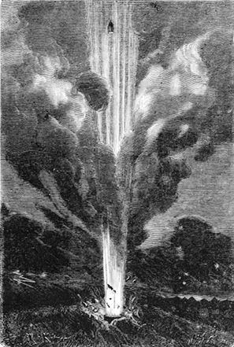
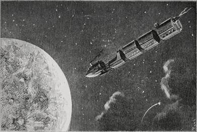
«Война миров»
Роман Герберта Уэллса «Война миров» (1898) считается первой крупной историей о вторжении инопланетян.
В нём рассказывается, как на Землю прибывают марсиане — существа, намного превосходящие людей по уровню техники.
Они строят боевые машины-треножники, излучают тепловые лучи и уничтожают всё на своём пути.
Города Англии превращаются в руины, а человечество оказывается абсолютно беззащитным перед силой чужой цивилизации.
Главный герой, обычный житель Лондона, становится свидетелем паники, бегства людей, гибели целых общин.
Но Уэллс неожиданно показывает, что спасти Землю может не оружие, а сама природа: марсиане погибают от земных бактерий,
к которым у них не оказалось иммунитета.
«Война миров» стала не только фантастикой, но и социальной притчей. Она породила целый пласт идей о встречах с
чужими цивилизациями, о слабости и уязвимости человека перед лицом космоса. Именно это и делает её важной частью
ретрофутуризма — представления о будущем, полном и опасностей, и открытий.
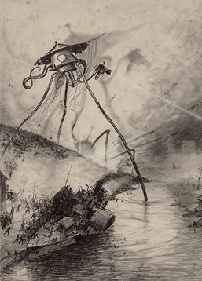
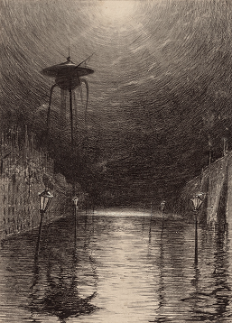
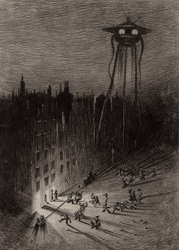
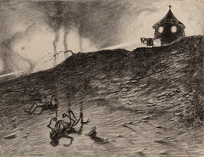

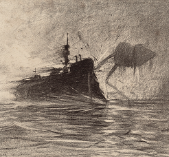
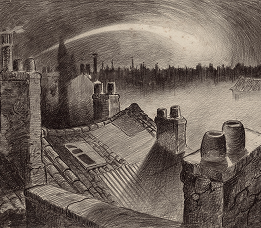
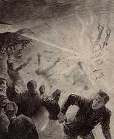
Константин Эдуардович Циолковский
Циолковский — один из самых ярких символов раннего космического воображения и вдохновитель ретрофутуристических идей.
Его труды не только заложили основу современной космонавтики, но и создали целый пласт мечтаний о будущем человечества в космосе.
Многоступенчатые ракеты в его представлении напоминали грандиозные башни устремлённые в небо — образы,
которые позже воплотились в иллюстрациях журналов и фильмах ретрофутуризма.
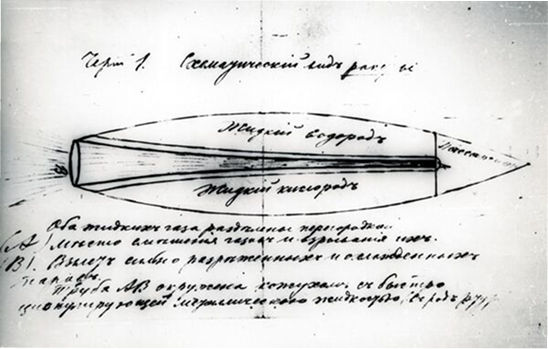
Одна из главных заслуг Циолковского — формулировка закона реактивного движения, того самого, на котором работает
вся современная космонавтика. По формуле Циолковского летают все ракеты — от первого советского спутника до современных аппаратов SpaceX.
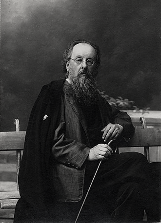
Циолковский воображал и вращающиеся космические станции. На его эскизах встречается станция в виде скрученной кольцом колбасы.
Он объяснял, что при достаточной скорости вращения возникает центробежная сила, которая создает эффект веса, заменяя земную
тяжесть. В своих эскизах, особенно в «Альбоме космических путешествий» (1933), Константин проработал детали конструкции — от
шлюзов и модулей до способов крепления оборудования.
В реальности ни один большой кольцевой космический поселок так и не был построен.
Реализовать такую концепцию было бы очень дорого, а раскрутить и контролировать вращение станции массой около 400 тонн
(МКС) — очень сложно. Но, возможно, когда-нибудь в будущем мы примем этот вызов!
Колонизация планет у него ассоциировалась с бесконечным расширением цивилизации. В ретрофутуристическом воображении это
воплощалось в утопических картинах новых миров, где люди создают прекрасные космические общества.
Циолковский соединял науку и фантазию: его идеи были одновременно строгими расчётами и вдохновляющими
видениями будущего. Именно это сочетание сделало его ключевой фигурой не только в истории космонавтики,
но и в культурном наследии ретрофутуризма.
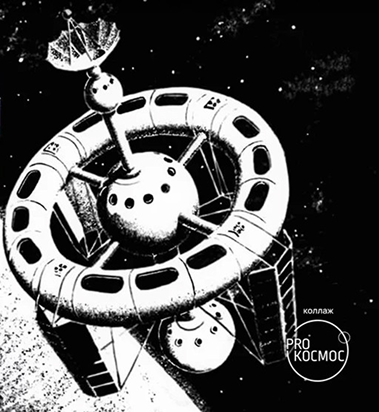
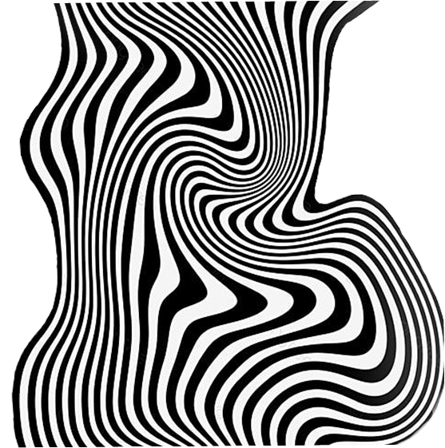
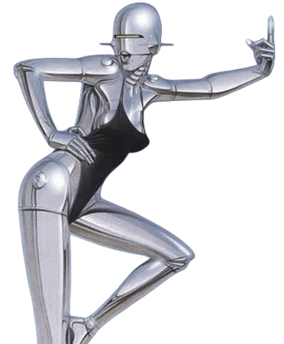